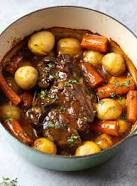

Pot Roast

Description
A pot roast is a delicious meal containing meat, potatoes, and carrots cooked on low heat in a crockpot.
Ingredients
- Chuck Roast
- Carrots
- Potatoes
- Onions
- Beef stock
- Herbs and seasonings
Steps
- SEAR BEEF Add oil to the pan and sear chuck roast in oil (bacon grease is better
if you have it!) until browned on all sides.
- ADD BROTH Place the onions around the roast and add wine, broth, rosemary, and thyme.
Bring to a simmer and then bake two hours in the oven.
- ADD VEGGIES Add potatoes and carrots and bake until the potatoes are tender, about two more hours.
Remove the bay leaf.
- SERVE Cut the roast into smaller pieces or shred with two forks and serve.
Home
Top of page